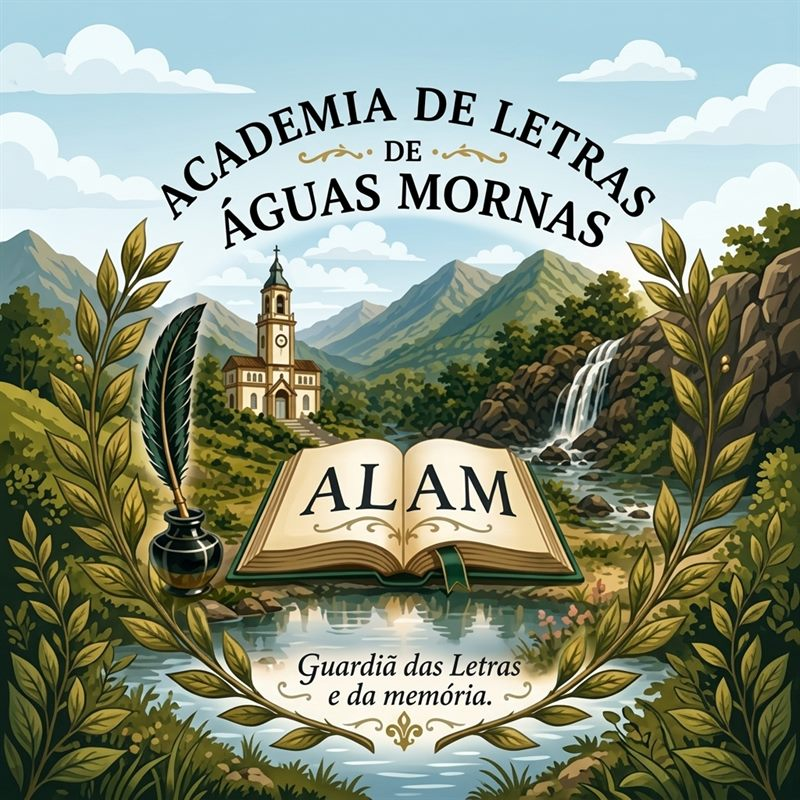

Presidência
Vânia Koerich
Presidente · 2025 – atual
Águas Mornas – Santa Catarina · desde 2018
“Guardiã das Letras e da memória.”
Uma comunidade de escritores, artistas e educadores dedicada à língua portuguesa, à literatura e à memória cultural de Águas Mornas e de Santa Catarina.

Apresentação institucional
Fundada em 22 de setembro de 2018, em cerimônia no auditório da Câmara de Vereadores de Águas Mornas, a Academia nasceu do encontro de idealizadores que acreditavam na palavra como patrimônio do povo.
A Academia cultiva o vernáculo, celebra os autores da região e abre espaço para novas vozes — em encontros, concursos, saraus e publicações que atravessam gerações. Sob a sigla ALAM, somos conhecidos entre nós: uma casa dedicada ao cultivo das letras e à memória cultural da nossa terra.
Conheça a ALAM
Quem somos, nossa missão, atuação e a trajetória de 2018 a 2026.
Presidência, quadro atual, diretoria fundadora e os patronos de cada cadeira.
Obras da Academia, entre elas Nascente de Prosa e Verso (2024).
Encontros das Artes, saraus, concursos, feiras e missões culturais.
Posses, parcerias, publicações e a Academia em movimento.
Fale com a presidência, proponha parcerias ou participe dos nossos encontros.
Em evidência
“Um encontro para celebrar a arte, a cultura e os talentos da nossa terra.”

Acadêmicos
Presidência atual, membros em destaque e a diretoria fundadora com seus patronos.
Presidente · 2025 – atual
Membro efetivo · posse em 2026
Acadêmica · desde 2018
ANACLA, ACPCC e CAPPAZ
Trajetória
Desde a fundação, a Academia consolidou o Encontro das Artes como cartão de visitas cultural da cidade, publicou a coletânea Nascente de Prosa e Verso, realizou o 1º Concurso de Poesias e Prosas e firmou parcerias com academias de todo o estado.
Em 2026, a agenda se amplia com a posse de novos acadêmicos, participação na 3ª FLIPALHOÇA, no Sarau Letras e Vozes e em missão cultural a Mossoró/RN.
Em números
Quer participar de um encontro, propor uma parceria ou conhecer melhor a academia? Fale com a nossa presidência.